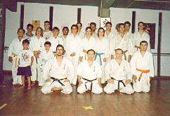
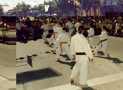
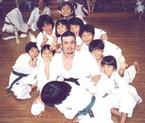

Centro de Enseñanza
|Acondicionamiento Físico| |Karate y la Mujer| |Karate y el Niño|
Enseñanza Integral
El Centro de Enseñanza de Karate-do Estilo Kyudokan de Okinawa -Filial Campana- es un Centro de Enseñanza Integral donde el alumno practica interactivamente en todos los aspectos del Arte Marcial.

No queremos encasillarnos en entrenar solamente el sistema de autodefensa, pues recaeríamos en el aspecto fisio-superficial, en donde el alumno ira nada más que a un gimnasio a practicar una actividad más.
Los torneos, las clases de camaradería, las salidas, conllevan al practicante a socializarse con el mundo exterior siempre en el ámbito del "Bu-do", las clases de los niños, interactuando y aprendiendo, jugando hacen que estos desarrollen sus habilidades motrices bsicas hecho fundamental para que estos cultiven la coordinacin psico-motriz.

En cuanto al arbitraje, organización de cuentos, etc., hacen que los alumnos aprendan el arte desde todo punto de vista, fijándose objetivos claros en los que cada uno deber superarse día a día.
En cuanto a la parte docente del centro de enseñanza podemos decir que hacemos lo que nos gusta trabajando profesionalmente desde todos sus ngulos, pero no solo con profesionalismo, lo hacemos por que nos gusta, porque lo sentimos y eso es lo importante; que podamos transmitir lo que llevamos dentro.

En este momento quizá sea conveniente mencionar las diferencias entre Karate y Karate-Do.
Karate se refiere al Arte Marcial desarrollado con la finalidad de defenderse de la violencia exterior mediante el cuerpo estrictamente entrenado como un arma.
Karate-Do sin embargo significa un modo de vivir basado en el Karate, en el cual uno puede llegar a ser ganador sin llegar a utilizar el Arte en el sentido estricto.
En otras palabras, su significado consiste en derrotar a los enemigos interiores, que son mayores que los exteriores, desarrollando a través de una disciplina cuidadosa, un cuerpo y una mente sanas mediante la práctica del Karate.
En pocas palabras se puede decir que Karate-Do trata de formar al hombre en su totalidad mediante el entrenamiento del Karate durante el resto de su vida.
Estas consideraciones pueden resumirse en las siguientes palabras: "Karate ni sente nashi" ("En Karate no hay primer ataque").
Por esto y mucho más nosotros hacemos Karate-Do.
[Presentacin] [Pensamiento] [Que es Karate] [Centro de Ens.] [Contacto] [Fotos]